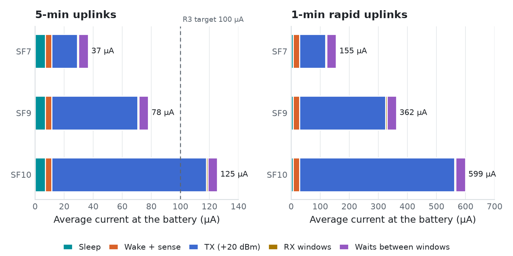

BINARY BEACH
Engineering & Software · Honolulu, Hawai‘i
Binary Beach LLC
Honolulu, Hawai‘i
maxwell.pauly@binarybeach.tech · (808) 372-6757
binarybeach.tech
Honolulu, Hawai‘i
maxwell.pauly@binarybeach.tech · (808) 372-6757
binarybeach.tech
3.3 Energy over a year


| Mode | Avg current | mAh/day | Dark days* |
|---|---|---|---|
| 5 min, SF7 | 37 µA | 0.88 | 691 |
| 5 min, SF9 | 78 µA | 1.87 | 550 |
| 5 min, SF10 | 125 µA | 3.01 | 446 |
| 1 min, SF9 | 362 µA | 8.69 | 229 |
| 1 min, SF10 | 599 µA | 14.38 | 154 |
*No sun at all, 80 % of 3 350 mAh usable, incl. Li-ion self-discharge. Sleep 6.9 µA: charger BAT leakage 4.3 µA is the largest single term.
The 2 W panel is about 100× larger than the energy need. It is sized as the sunshade, not as an energy source; a 0.5 W panel would also be energy-positive but would not shade the box.
Binary Beach LLC · Tradewind TW-1 rev B · BB-ENG-2026-014Page 6 of 24